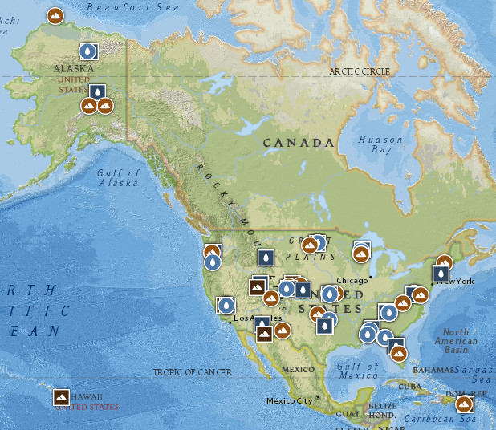
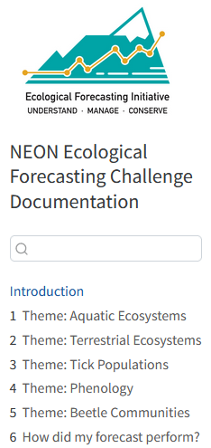
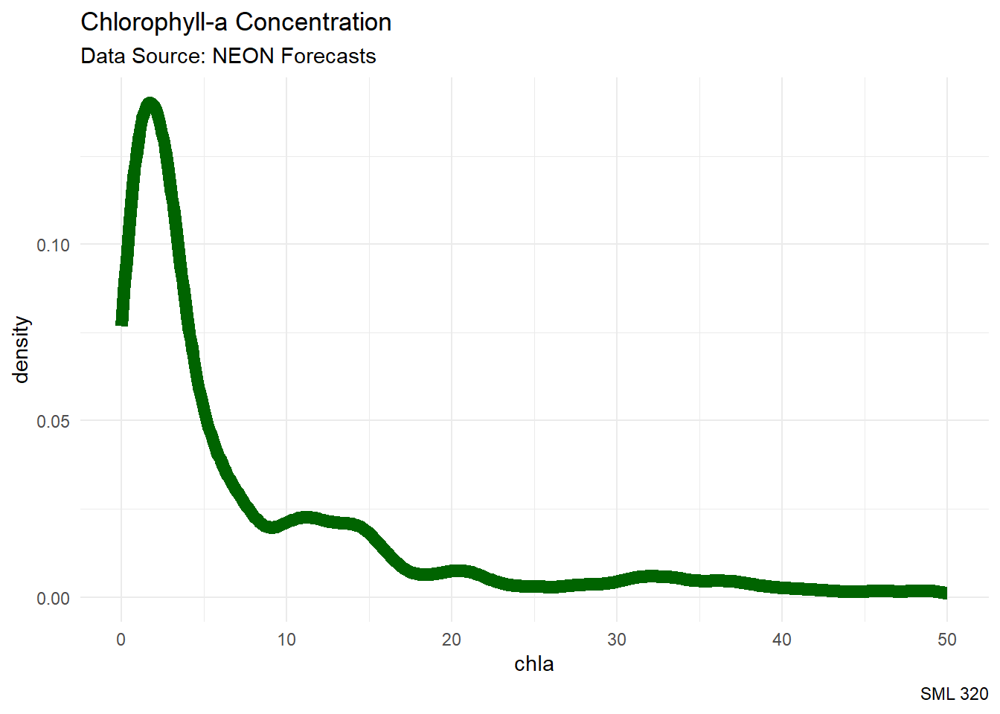
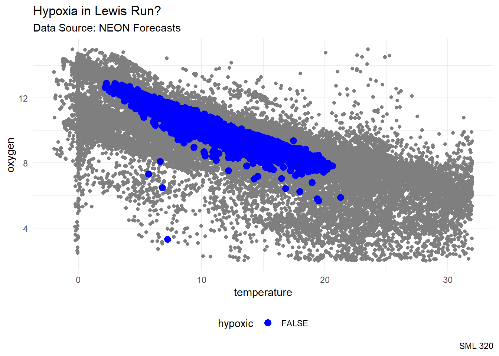
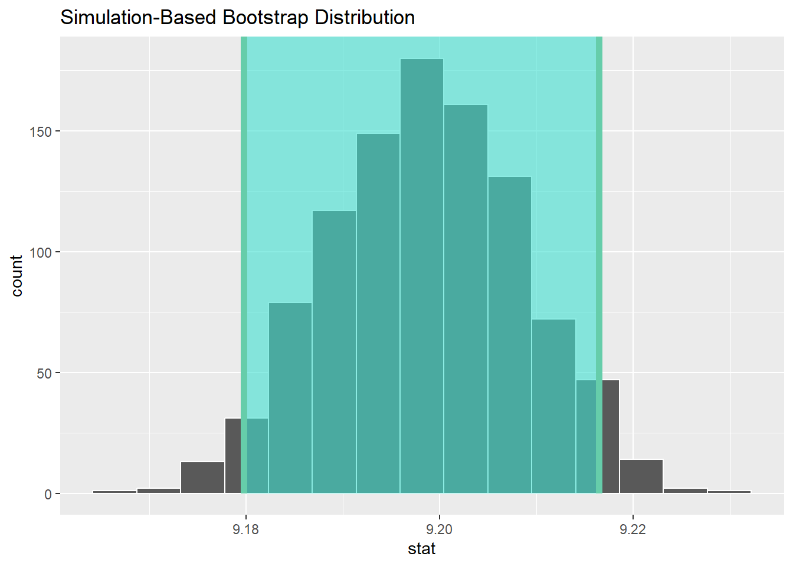
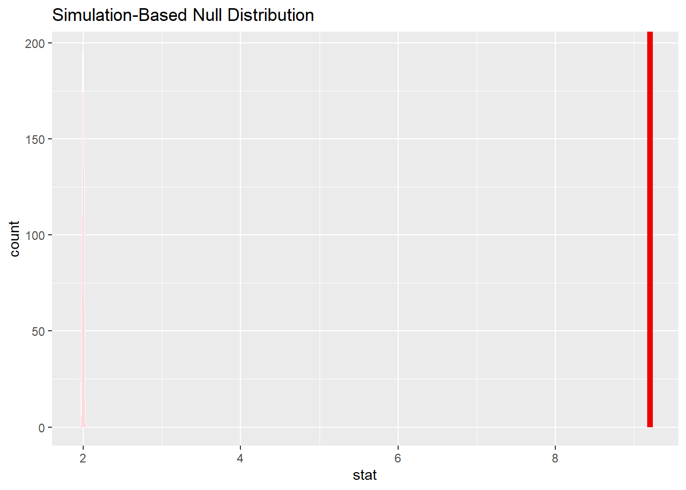

library("bayesrules")
library("infer") #for frequentist approaches
library("patchwork")
library("tidyverse")
knitr::opts_chunk$set(echo = TRUE)Data
NEON
“The National Science Foundation’s National Ecological Observatory Network (NEON) is a continental-scale observation facility operated by Battelle and designed to collect long-term open access ecological data to better understand how U.S. ecosystems are changing.”
NEON Field Sites
“NEON’s aquatic and terrestrial sites are strategically located across the U.S. within 20 ecoclimatic Domains that represent regions of distinct landforms, vegetation, climate and ecosystem dynamics.”

NEON Forecasts Challenge
“The National Science Foundation funded Ecological Forecasting Initiative Research Coordination Network (EFI-RCN) is hosting a NEON Ecological Forecast Challenge with the goal to create a community of practice that builds capacity for ecological forecasting by leveraging NEON data products. The Challenge revolves around the five theme areas listed below that span aquatic and terrestrial systems, and population, community, and ecosystem processes across a broad range of ecoregions that uses data collected by NEON.”

neon4casts package
The neon4cast package “provides a collection of convenient helper utilities for anyone entering the EFI NEON Forecasting Challenge.”
- real-world data
- updated nearly daily
- very easy API access
raw_df <- readr::read_csv("https://data.ecoforecast.org/neon4cast-targets/aquatics/aquatics-targets.csv.gz")Alternative Data Source: AQICN
Data Product
head(raw_df)# A tibble: 6 × 4
datetime site_id variable observation
<date> <chr> <chr> <dbl>
1 2016-03-05 ARIK chla NA
2 2016-03-05 ARIK oxygen NA
3 2016-03-06 ARIK chla NA
4 2016-03-06 ARIK oxygen NA
5 2016-03-07 ARIK chla NA
6 2016-03-07 ARIK oxygen NAData Wrangling
aquatic_df <- raw_df %>%
pivot_wider(names_from = "variable", values_from = "observation")
head(aquatic_df)# A tibble: 6 × 5
datetime site_id chla oxygen temperature
<date> <chr> <dbl> <dbl> <dbl>
1 2016-03-05 ARIK NA NA NA
2 2016-03-06 ARIK NA NA NA
3 2016-03-07 ARIK NA NA NA
4 2016-03-08 ARIK NA NA NA
5 2016-03-09 ARIK NA NA NA
6 2016-03-10 ARIK NA NA NAcolnames(aquatic_df)[1] "datetime" "site_id" "chla" "oxygen" "temperature"Exploratory Data Analyses
Variables
We have about 7 years of daily data.
aquatic_df |> select(datetime) |> slice(1, n())# A tibble: 2 × 1
datetime
<date>
1 2016-03-05
2 2024-02-24aquatic_df |> select(site_id) |> distinct() |> as.vector()$site_id
[1] "ARIK" "BARC" "BIGC" "BLDE" "BLUE" "BLWA" "CARI" "COMO" "CRAM" "CUPE"
[11] "FLNT" "GUIL" "HOPB" "KING" "LECO" "LEWI" "LIRO" "MART" "MAYF" "MCDI"
[21] "MCRA" "OKSR" "POSE" "PRIN" "PRLA" "PRPO" "REDB" "SUGG" "SYCA" "TECR"
[31] "TOMB" "TOOK" "WALK" "WLOU"aquatic_df |> group_by(site_id) |> count() |> select(site_id, n)# A tibble: 34 × 2
# Groups: site_id [34]
site_id n
<chr> <int>
1 ARIK 2912
2 BARC 2307
3 BIGC 2113
4 BLDE 1980
5 BLUE 1978
6 BLWA 1573
7 CARI 1236
8 COMO 2463
9 CRAM 1150
10 CUPE 2107
# ℹ 24 more rows- non-wadeable river sites (“lakes”)
- “Phytoplankton biomass are the base of the aquatic food-web and an important indicator of water quality for managers.”
aquatic_df |>
ggplot(aes(x = chla)) +
geom_density(color = "darkgreen", linewidth = 3) +
labs(title = "Chlorophyll-a Concentration",
subtitle = "Data Source: NEON Forecasts",
caption = "SML 320") +
theme_minimal() +
xlim(0, 50)
The Lewis Run NEON station is located 60 miles west of Washingon DC. It is in the “Mid-Atlantic” region of the NEON stations, and it is perhaps the closest in climate to Princeton, New Jersey.
aquatic_df |> filter(site_id == "LEWI") |> tail()# A tibble: 6 × 5
datetime site_id chla oxygen temperature
<date> <chr> <dbl> <dbl> <dbl>
1 2024-02-19 LEWI NA 6.47 6.80
2 2024-02-20 LEWI NA 8.10 6.62
3 2024-02-21 LEWI NA 3.31 7.24
4 2024-02-22 LEWI NA NA 7.76
5 2024-02-23 LEWI NA NA 8.59
6 2024-02-24 LEWI NA NA 8.82- dissolved oxygen concentrations less than 2 mg/L are considered hypoxic.
lewi_df <- aquatic_df |>
filter(site_id == "LEWI") |>
filter(!is.na(oxygen)) |>
mutate(hypoxic = oxygen < 2)
aquatic_df |>
ggplot() +
geom_point(aes(x = temperature, y = oxygen),
color = "gray50") +
geom_point(aes(x = temperature, y = oxygen, color = hypoxic),
data = lewi_df, size = 3) +
labs(title = "Hypoxia in Lewis Run?",
subtitle = "Data Source: NEON Forecasts",
caption = "SML 320") +
scale_color_manual(values = c("blue", "red")) +
theme_minimal() +
theme(legend.position = "bottom")
Credible Intervals
Frequentist Approach: Confidence Interval
A confidence interval records percentile endpoints of a sampling distribution that was made by resampling the data with replacement.
Using code from the infer package, as seen in the ModernDive textbook
bootstrap_distribution <- aquatic_df %>%
specify(response = oxygen) %>%
generate(reps = 1000) %>%
calculate(stat = "mean")Warning: Removed 19159 rows containing missing values.Setting `type = "bootstrap"` in `generate()`.percentile_ci <- bootstrap_distribution %>%
get_confidence_interval(level = 0.95, type = "percentile")visualize(bootstrap_distribution) +
shade_confidence_interval(endpoints = percentile_ci)
percentile_ci# A tibble: 1 × 2
lower_ci upper_ci
<dbl> <dbl>
1 9.18 9.22We are 95% confident that the true average concentration level in American bodies of water is between 9.18 and 9.22 mg/L.
Prior
Considering the oxygen concentration levels, we will model both the prior and observed data as continuous variables, which lends itself to a normal-normal conjugate pair.
For a rather informative prior (perhaps too restrictive), let us get the oxygen concentrations from the year 2023 data.
aquatic_df |>
filter(between(datetime,
as_date("2023-01-01"),
as_date("2023-12-31"))) |>
summarise(mean = mean(oxygen, na.rm = TRUE),
sd = sd(oxygen, na.rm = TRUE),
n_prior = n())# A tibble: 1 × 3
mean sd n_prior
<dbl> <dbl> <int>
1 9.20 2.16 11155Observed Data
Then, let us focus on the year 2024 data (before today).
aquatic_df |>
filter(datetime >as_date("2024-01-01")) |>
summarise(y_bar = mean(oxygen, na.rm = TRUE),
sigma = sd(oxygen, na.rm = TRUE),
n_obs = n())# A tibble: 1 × 3
y_bar sigma n_obs
<dbl> <dbl> <int>
1 10.8 1.77 1462Posterior Distribution
bayesrules::summarize_normal_normal(
#from prior
mean = 9.202716, sd = 2.162342,
# from observed data
sigma = 1.768468, y_bar = 10.83557, n = 1462
) |>
mutate_if(is.numeric, round, digits = 4) model mean mode var sd
1 prior 9.2027 9.2027 4.6757 2.1623
2 posterior 10.8348 10.8348 0.0021 0.0462Credible Interval
To get a 95 percent credible interval, retrieve the locations of the 2.5 and 97.5 percentiles from the posterior distribution.
qnorm(c(0.025, 0.975), mean = 10.8348, sd = 0.0462)[1] 10.74425 10.92535Inference and Commentary
The posterior oxygen concentration levels are between 10.74 and 10.93 mg/L.
- So far, it appears that credible intervals are smaller than confidence intervals (partly because of noting sample sizes)
- We did not have to aim for 95% credibility
- We did not have to retrieve the “middle” 95%
- Do we have “recency bias”?
NHST: One-Sided
Frequentist Approach
Recall that hypoxia is classified as having dissolved oxygen concentration levels under 2 mg/L.
\[\text{H}_{o}: \mu = 2\] \[\text{H}_{a}: \mu < 2\]
In frequentist null hypothesis significance testing (NHST), the p-value is the probability of encountering results that are at least as extreme as the observed results under the assumption that the null hypothesis is true.
- p-value < 0.05: reject the null hypothesis
- p-value >= 0.05: fail to reject the null hypothesis
obs_mean <- aquatic_df |>
specify(response = oxygen) |>
calculate(stat = "mean")Warning: Removed 19159 rows containing missing values.null_distribution <- aquatic_df |>
specify(response = oxygen) |>
hypothesize(null = "point", mu = 2) |>
generate(reps = 1000, type = "bootstrap") |>
calculate(stat = "mean")Warning: Removed 19159 rows containing missing values.null_distribution |>
visualise() +
shade_p_value(obs_stat = obs_mean, direction = "less")
null_distribution |>
get_p_value(obs_stat = obs_mean, direction = "less")# A tibble: 1 × 1
p_value
<dbl>
1 1Since the p-value > 0.05, we fail to reject the claim that the dissolved oxygen concentration level in American bodies of water is 2 mg/L.
Prior and Posterior Probabilities
model mean mode var sd
1 prior 9.2027 9.2027 4.6757 2.1623
2 posterior 10.8348 10.8348 0.0021 0.0462prior_prob <- pnorm(2, mean = 9.2027, sd = 2.1623)
posterior_prob <- pnorm(2, mean = 10.8348, sd = 0.0462)Prior and Posterior Odds
prior_odds <- prior_prob / (1 - prior_prob)
posterior_odds <- posterior_prob / (1 - posterior_prob)Bayes Factor
\[\text{Bayes Factor} = \displaystyle\frac{\text{posterior odds}}{\text{prior odds}}\]
- \(BF = 1\): the plausibility of \(H_{a}\) did not change with the observed data
- \(BF > 1\): the plausibility of \(H_{a}\) increased with the observed data
- \(BF < 1\): the plausibility of \(H_{a}\) decreased with the observed data
Inference
# Bayes factor
BF <- posterior_odds / prior_odds
BF[1] 0The plausibility of observing hypoxic conditions decreased with the inclusion of the year 2024 data.
NHST: Two-Sided
Null Hypothesis
For this example, let us claim that the dissolved oxygen concentration level is “close” to 10.7 mg/L
\[\text{H}_{o}: \mu \in (10.6, 10.8)\] \[\text{H}_{a}: \mu \notin (10.6, 10.8)\]
Prior and Posterior Probabilities
prior_prob <- diff(pnorm(c(10.6, 10.8),
mean = 9.2027, sd = 2.1623))
posterior_prob <- diff(pnorm(c(10.6, 10.8),
mean = 10.8348, sd = 0.0462))Bayes Factor
prior_odds <- prior_prob / (1 - prior_prob)
posterior_odds <- posterior_prob / (1 - posterior_prob)
BF <- posterior_odds / prior_odds
BF[1] 9.747294The plausibility of observing dissolved oxygen concentration level “near” 10.7 mg/L increased with the inclusion of the year 2024 data.
Footnotes
Session Info
sessionInfo()R version 4.3.2 (2023-10-31 ucrt)
Platform: x86_64-w64-mingw32/x64 (64-bit)
Running under: Windows 10 x64 (build 19045)
Matrix products: default
locale:
[1] LC_COLLATE=English_United States.utf8
[2] LC_CTYPE=English_United States.utf8
[3] LC_MONETARY=English_United States.utf8
[4] LC_NUMERIC=C
[5] LC_TIME=English_United States.utf8
time zone: America/New_York
tzcode source: internal
attached base packages:
[1] stats graphics grDevices utils datasets methods base
other attached packages:
[1] lubridate_1.9.3 forcats_1.0.0 stringr_1.5.1 dplyr_1.1.4
[5] purrr_1.0.2 readr_2.1.5 tidyr_1.3.1 tibble_3.2.1
[9] ggplot2_3.4.3 tidyverse_2.0.0 patchwork_1.1.2 infer_1.0.4
[13] bayesrules_0.0.2
loaded via a namespace (and not attached):
[1] gridExtra_2.3 inline_0.3.19 rlang_1.1.1
[4] magrittr_2.0.3 snakecase_0.11.0 matrixStats_1.0.0
[7] e1071_1.7-13 compiler_4.3.2 loo_2.6.0
[10] callr_3.7.3 vctrs_0.6.5 reshape2_1.4.4
[13] pkgconfig_2.0.3 crayon_1.5.2 fastmap_1.1.1
[16] ellipsis_0.3.2 labeling_0.4.3 utf8_1.2.4
[19] threejs_0.3.3 promises_1.2.1 rmarkdown_2.24
[22] tzdb_0.4.0 markdown_1.8 ps_1.7.5
[25] nloptr_2.0.3 bit_4.0.5 xfun_0.40
[28] jsonlite_1.8.7 later_1.3.1 parallel_4.3.2
[31] prettyunits_1.2.0 R6_2.5.1 dygraphs_1.1.1.6
[34] stringi_1.8.3 StanHeaders_2.32.5 boot_1.3-28.1
[37] Rcpp_1.0.11 rstan_2.32.5 knitr_1.43
[40] zoo_1.8-12 base64enc_0.1-3 bayesplot_1.10.0
[43] httpuv_1.6.11 Matrix_1.6-1.1 splines_4.3.2
[46] igraph_1.4.3 timechange_0.3.0 tidyselect_1.2.0
[49] rstudioapi_0.15.0 yaml_2.3.8 codetools_0.2-19
[52] miniUI_0.1.1.1 curl_5.0.2 processx_3.8.1
[55] pkgbuild_1.4.0 lattice_0.21-9 plyr_1.8.8
[58] withr_3.0.0 shiny_1.7.5 groupdata2_2.0.2
[61] evaluate_0.21 survival_3.5-7 proxy_0.4-27
[64] RcppParallel_5.1.7 xts_0.13.1 pillar_1.9.0
[67] DT_0.28 stats4_4.3.2 shinyjs_2.1.0
[70] generics_0.1.3 vroom_1.6.5 hms_1.1.3
[73] rstantools_2.3.1 munsell_0.5.0 scales_1.2.1
[76] minqa_1.2.5 gtools_3.9.4 xtable_1.8-4
[79] class_7.3-22 glue_1.6.2 janitor_2.2.0
[82] tools_4.3.2 shinystan_2.6.0 lme4_1.1-33
[85] colourpicker_1.2.0 grid_4.3.2 QuickJSR_1.1.3
[88] crosstalk_1.2.0 colorspace_2.1-0 nlme_3.1-163
[91] cli_3.6.1 fansi_1.0.6 V8_4.3.0
[94] gtable_0.3.4 digest_0.6.33 farver_2.1.1
[97] htmlwidgets_1.6.2 htmltools_0.5.6 lifecycle_1.0.4
[100] mime_0.12 rstanarm_2.21.4 bit64_4.0.5
[103] shinythemes_1.2.0 MASS_7.3-60